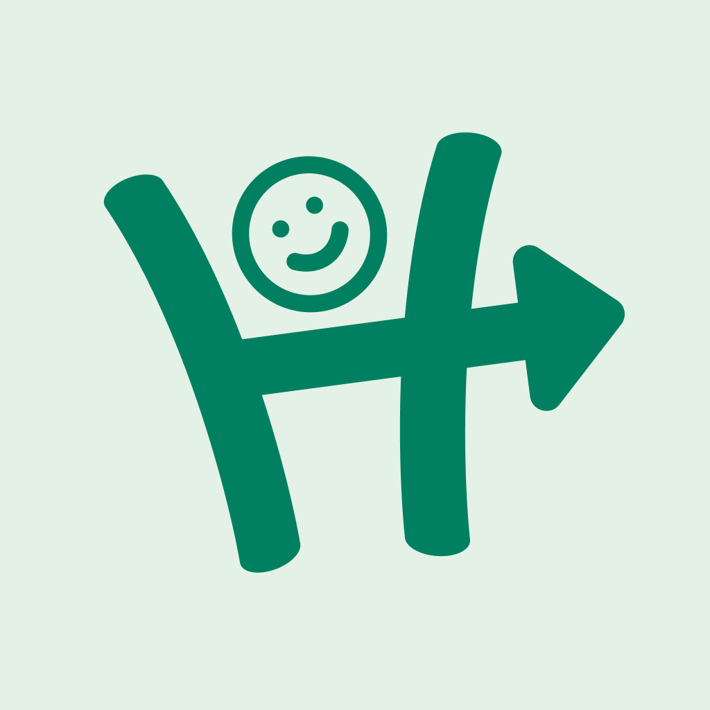
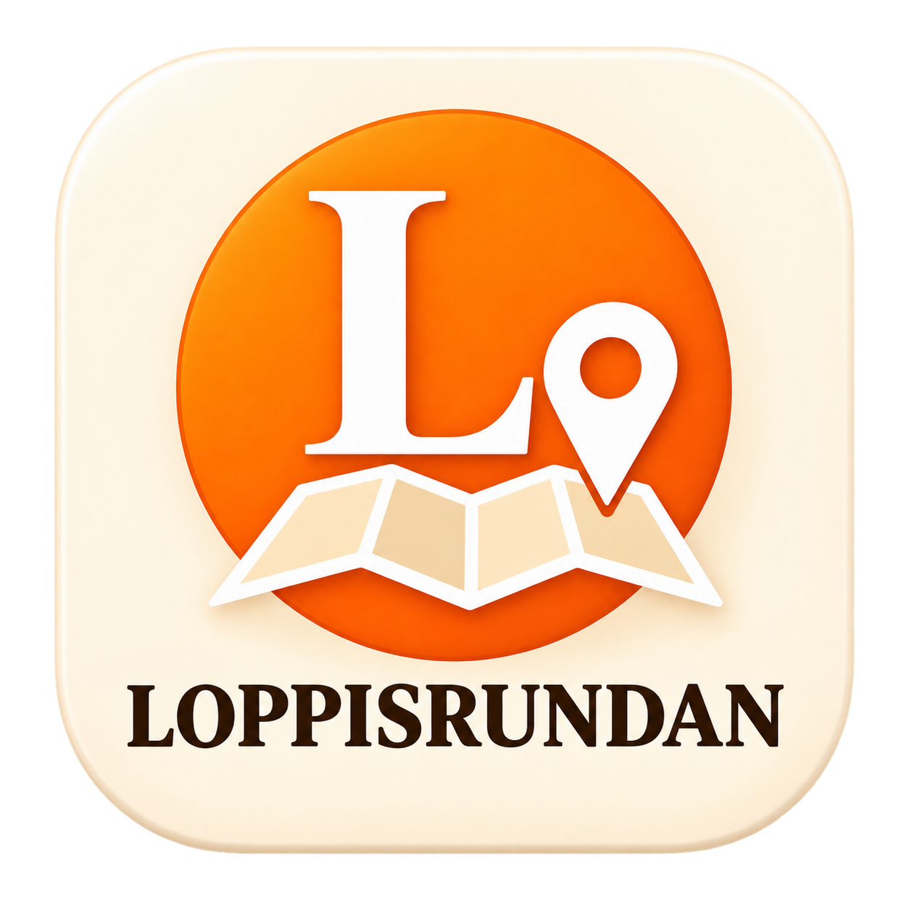

Om oss
Kul att träffa dig här!
Jag är Jim Lewis Skoglund, konstnären bakom Hitch-projektet. Projektet väcktes till liv ur min
passion för teknik och kartor, kombinerat med den spännande potentialen i delningsekonomi. För mig
är detta projekt mer än bara ett konstverk - det är ett meningsfullt verktyg som drivs av en vision
om en användarvänlig applikation som strävar efter att vara så bra som möjligt. Tanken har funnits
länge, men livet har inte alltid gett mig möjligheten att förverkliga den. Nu känner jag en stark
önskan att fullfölja denna vision och skapa en app som förtjänar sin plats på era mobiler.
Min erfarenhet av att köra
färjan mellan Malmö och Travemünde i Tyskland har bidragit till min yrkeskunskap om koordinater och
bäringar, vilket har varit till nytta i att utveckla applikationens funktioner. Problemlösning och
logiskt tänkande är något jag verkligen trivs med!
Förutom Hitch-projektet pratar jag gärna om klättring, spel, träning och äventyr. Jag bjuder in dig
att följa med på denna resa för att skapa ett nytt sätt att resa i samhället - nämligen att Hitcha!
Ser fram emot att höra era åsikter och idéer.
Vänliga hälsningar,
Jim Lewis Skoglund
Hitchapp Workshop Teamet

Jim Lewis Skoglund
Styrman och programmerare
📍 Malmö
Utvecklare och projektledare för Hitch. Utvecklare för Splitbetween.
David Wenner
Designingenjör
📍 Malmö
Projektdesigner för Splitbetween. Utvecklare och projektdesigner för Loppisrundan.
Apparna

Hitch
Hitch är projektets huvudapp - den gör det enkelt att samåka genom att koppla ihop förare och passagerare som ska åt samma håll, vilket gör vardagsresor billigare, grönare och roligare.
Splitbetween
Splitbetween är en enkel app som hjälper vänner att snabbt och tydligt dela på gemensamma kostnader, så att alla kan hålla koll på vem som betalat vad och göra upp utan krångel.

Loppisrundan
Loppisrundan är en karttjänst som hjälper dig att hitta loppisar i närheten. Med en tydlig kartvy kan du enkelt upptäcka pågående loppisar, planera din rutt och göra fler fynd på kortare tid.